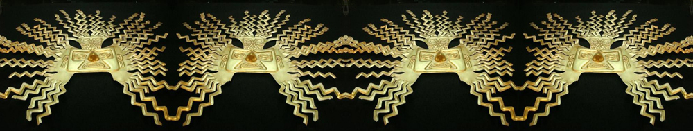
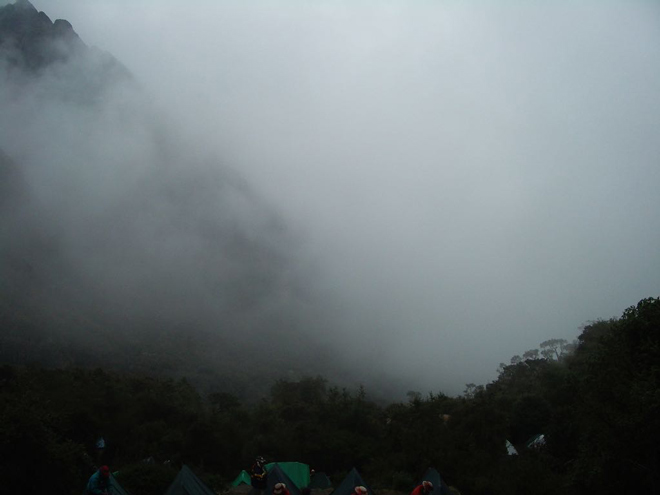
A misty start to a long and difficult day. Beginning with a steep ascent to Runkuracay, a small archeological site at 3,800m, we continued up to Runkuracay Pass at 4,000m and then downhill to the well-preserved Inca ruins at Sayaqmarca (3,600m).
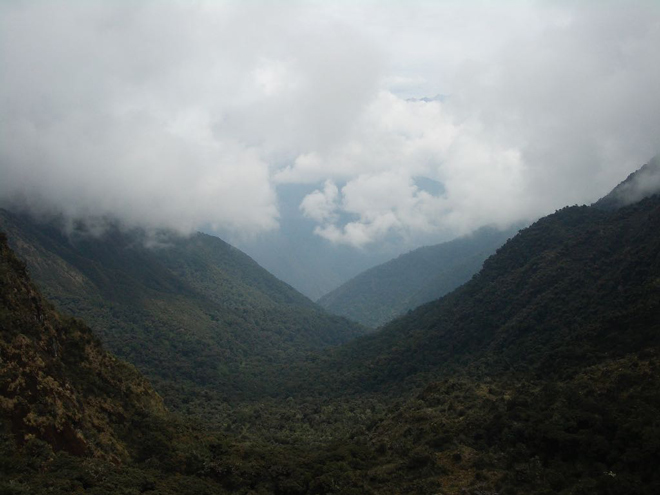
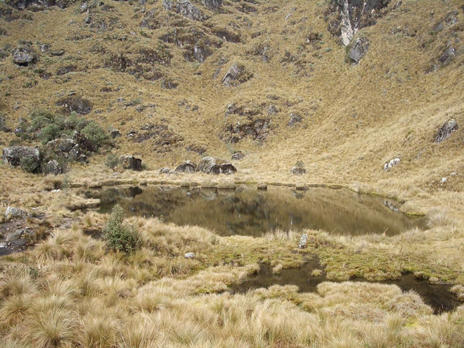
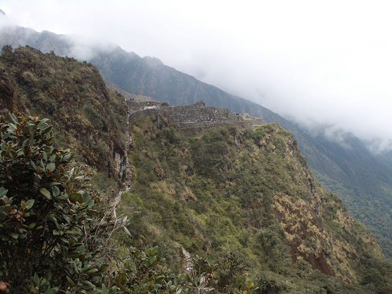
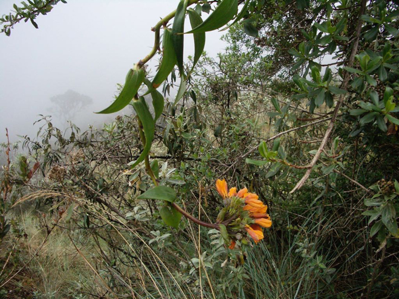
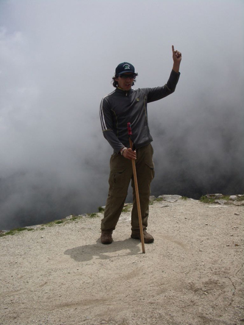
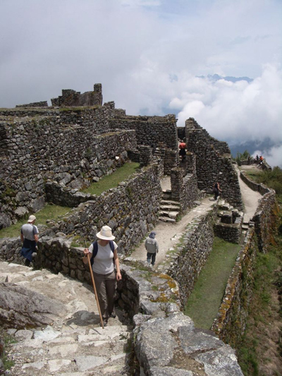
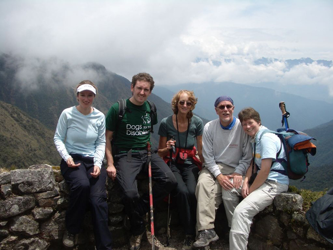
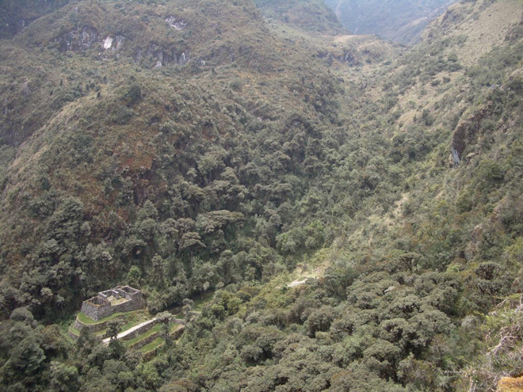
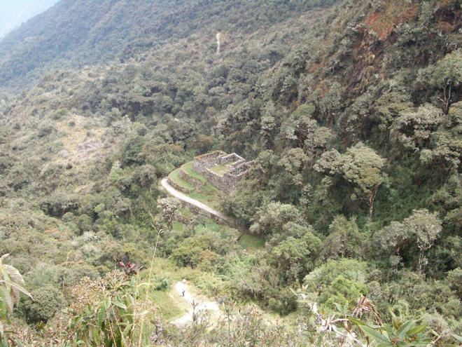
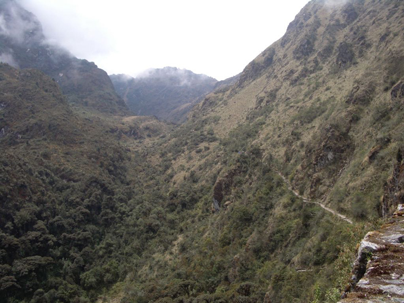
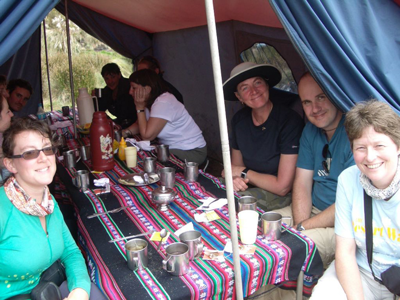
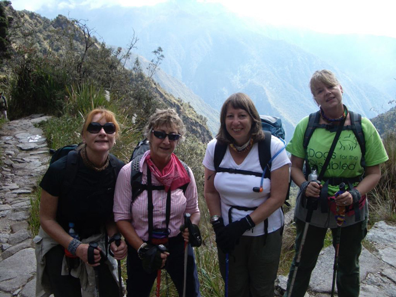
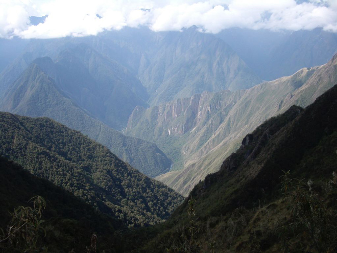
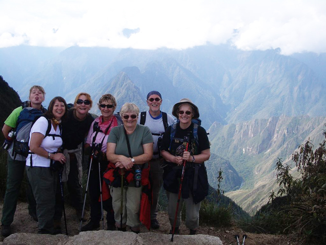
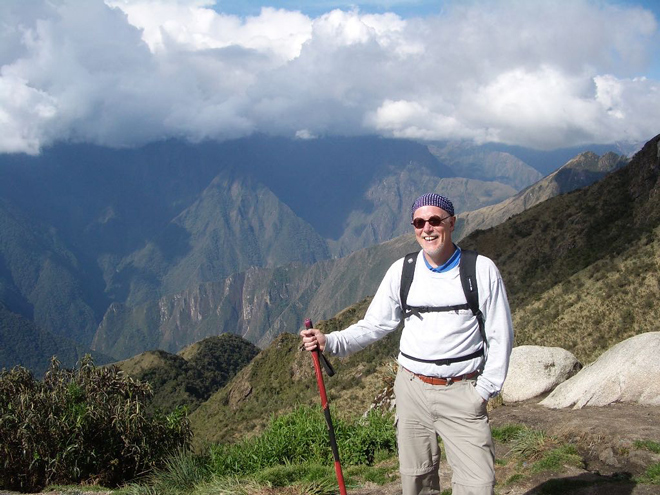
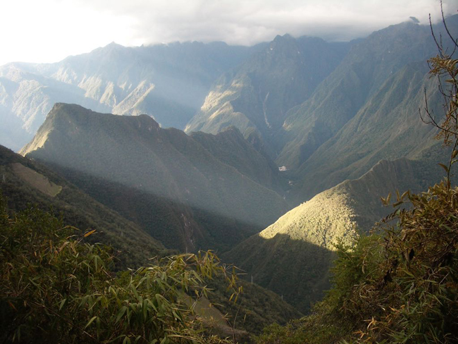
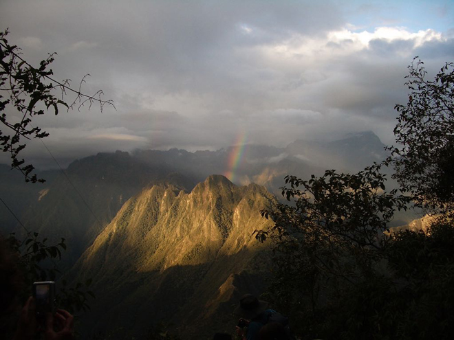
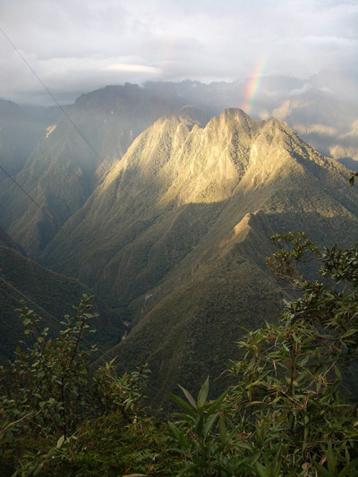
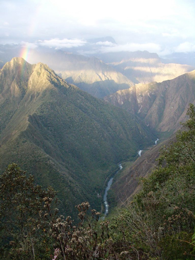
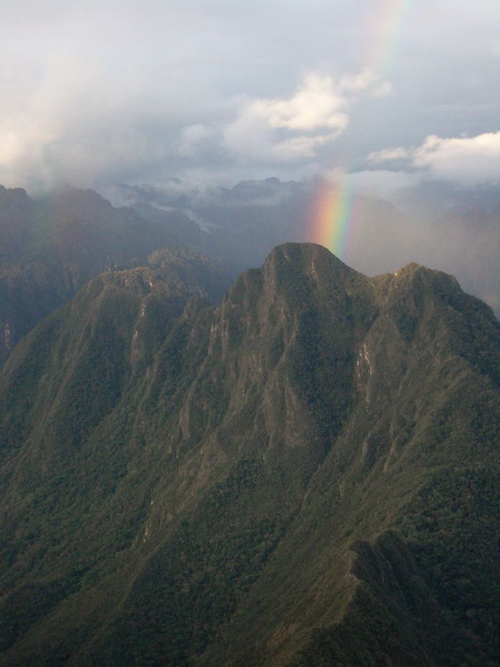
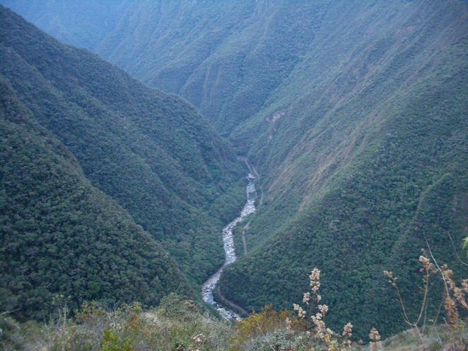